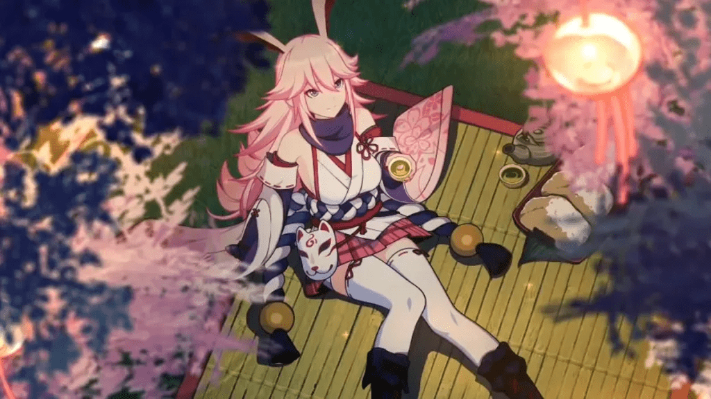

Yae Sakura Dikabarkan Muncul di Anniversary Honkai: Star Rail Tahun Depan, Benarkah?

Honkai: Star Rail, salah satu game gacha terpopuler dari HoYoverse, terus menjadi sorotan berkat update dan konten menarik yang rutin dirilis. Salah satu momen paling ditunggu oleh para pemain setia adalah event anniversary tahunan. Menariknya, menjelang perayaan tahun depan, rumor mengenai kemunculan karakter ikonik Yae Sakura mulai ramai dibicarakan. Benarkah karakter legendaris ini akan meramaikan perayaan besar tersebut?
Antusiasme Penggemar Terhadap Yae Sakura
Yae Sakura bukanlah karakter biasa di semesta Honkai. Sosoknya dikenal memikat dengan desain menawan, kemampuan tempur yang khas, serta latar belakang cerita yang kuat dan emosional. Tidak heran jika kehadirannya di berbagai seri Honkai selalu mencuri perhatian dan menjadi favorit banyak pemain, baik yang baru bergabung maupun pemain lama.
Dalam beberapa bulan terakhir, rumor kemunculan Yae Sakura di event anniversary Honkai: Star Rail mulai menyebar di berbagai komunitas online. Mulai dari forum, grup Discord, hingga media sosial seperti Twitter dan Reddit, spekulasi mengenai desain barunya, voice line eksklusif, hingga potensi skin spesial yang hanya hadir selama event semakin ramai dibahas. Hal ini menunjukkan betapa besar pengaruh karakter ini terhadap komunitas game.
Event Anniversary: Momen Paling Dinanti Pemain
Event anniversary Honkai: Star Rail selalu menjadi momen penting yang ditunggu-tunggu setiap tahunnya. Di sinilah biasanya HoYoverse memberikan konten eksklusif seperti banner karakter terbatas, skin spesial, hadiah menarik, dan pembaruan fitur dalam game. Jika benar Yae Sakura akan hadir dalam event ini, maka bisa dipastikan bahwa ia akan menjadi salah satu highlight utama yang memikat banyak pemain untuk kembali aktif.
Selain dari segi hadiah, biasanya HoYoverse juga merilis storyline baru yang lebih mendalam dalam event anniversary. Ini bukan sekedar cerita tambahan, tapi sering kali membawa dampak signifikan terhadap perkembangan dunia dalam game. Jika Yae Sakura memang muncul, besar kemungkinan cerita khusus akan dirilis untuk menggali lebih dalam latar belakang atau perannya di dunia Star Rail.
Bocoran dan Spekulasi Seputar Yae Sakura
Meski belum ada pengumuman resmi dari pihak HoYoverse, berbagai bocoran dan spekulasi seputar Yae Sakura tetap ramai dibahas. Salah satu spekulasi paling menarik adalah kemungkinan Yae Sakura akan hadir dalam bentuk atau versi baru, berbeda dari penampilannya di seri sebelumnya. Baik dari segi tampilan, skill set, hingga animasi, pemain berharap ada banyak kejutan menyenangkan yang disiapkan oleh developer.
Beberapa dataminer bahkan sempat membagikan informasi yang diyakini sebagai referensi awal desain atau kemampuan dari Yae Sakura versi Star Rail. Meski informasi seperti ini perlu disikapi dengan hati-hati, namun hal tersebut cukup untuk membakar semangat komunitas dan memperkuat ekspektasi akan kehadiran karakter ini di event besar mendatang.
Kehadiran Karakter Legendaris dan Pengaruhnya Terhadap Game
Kehadiran karakter legendaris seperti Yae Sakura tentu membawa dampak besar, bukan hanya dari sisi gameplay, tetapi juga dari sisi ekonomi dalam game. Setiap kali karakter populer diperkenalkan dalam banner eksklusif, biasanya terjadi lonjakan transaksi top-up dari pemain yang ingin mendapatkan karakter tersebut. Ini menjadi win-win solution bagi pemain dan developer.
Tak hanya pemain lama, karakter seperti Yae Sakura juga memiliki daya tarik yang mampu menarik pemain baru. Melihat ikon lama hadir kembali dengan balutan baru, tentu saja menjadi magnet tersendiri yang bisa memperluas basis komunitas pemain. Dengan begitu, momen anniversary ini tidak hanya menjadi nostalgia, tetapi juga alat promosi yang kuat bagi game itu sendiri.
Prediksi Banner dan Konten Eksklusif di Anniversary
Melihat pola event sebelumnya, kemungkinan besar Yae Sakura akan hadir melalui banner eksklusif dengan periode terbatas. Banner ini biasanya menyajikan karakter-karakter kuat dan populer, sehingga banyak pemain menyusun strategi gacha mereka jauh-jauh hari. Tak menutup kemungkinan, akan ada juga skin spesial yang hanya tersedia dalam event ini, yang tentu saja menambah nilai koleksi karakter tersebut.
Selain banner, event anniversary juga biasanya dibarengi dengan quest eksklusif yang memberikan berbagai reward menarik. Mulai dari item langka, material upgrade, hingga in-game currency. Jika storyline Yae Sakura benar-benar dirilis, maka ini akan menjadi momen penting yang memperkuat ikatan emosional pemain terhadap karakter tersebut, serta meningkatkan daya tarik event secara keseluruhan.
Koneksi Cerita Yae Sakura dengan Dunia Honkai
Salah satu kekuatan dari Yae Sakura adalah cerita yang dimilikinya. Karakter ini punya latar belakang kompleks, emosional, dan penuh konflik batin yang membuatnya sangat relate dengan banyak pemain. Jika HoYoverse menghadirkan storyline baru yang mengeksplorasi sisi lain dari Yae Sakura, tentu saja hal ini akan menjadi daya tarik tersendiri yang meningkatkan kualitas konten naratif dalam game.
Bukan sekedar penambahan karakter, tapi juga perluasan semesta Honkai itu sendiri. Jika plotnya dieksekusi dengan baik, bisa jadi storyline ini akan menjadi salah satu konten paling dikenang dalam sejarah Honkai: Star Rail. Ini akan menambah kedalaman narasi sekaligus memperkuat koneksi emosional pemain terhadap dunia game dan karakter yang ada di dalamnya.
Strategi Pemain Menyambut Banner Eksklusif
Menjelang event besar seperti anniversary, pemain biasanya sudah mulai mempersiapkan segala sesuatu dengan matang. Mulai dari mengatur resource seperti Stellar Jade, mengumpulkan item upgrade, hingga menjaga stamina agar bisa menyelesaikan semua event tepat waktu. Strategi ini menjadi hal krusial agar saat banner muncul, peluang mendapatkan Yae Sakura jadi semakin besar.
Di komunitas, diskusi soal strategi ini sangat aktif. Pemain saling berbagi informasi tentang kombinasi tim terbaik, prediksi waktu rilis banner, hingga teori build karakter untuk performa optimal. Aktivitas ini tidak hanya memperkuat interaksi antar pemain, tapi juga menjadi salah satu daya tarik komunitas itu sendiri yang saling mendukung.
Antusiasme Komunitas di Media Sosial
Seiring dengan semakin maraknya rumor, aktivitas komunitas di media sosial pun makin meningkat. Banyak pemain mulai membahas kemungkinan skill set Yae Sakura, potensi peran dalam meta, hingga tampilan visualnya. Diskusi ini ramai ditemukan di platform seperti Twitter, Facebook, dan juga forum resmi game.
Menariknya, HoYoverse dikenal sering memantau feedback komunitas. Jadi, bukan tidak mungkin antusiasme tinggi terhadap rumor Yae Sakura bisa menjadi bahan pertimbangan developer untuk mempercepat atau menyesuaikan strategi konten mereka ke depannya. Hal ini membuktikan bahwa komunitas memiliki peran penting dalam arah pengembangan game.
Dampak Ekonomi dan Strategi Monetisasi
Jika benar Yae Sakura akan hadir di anniversary, sudah bisa dipastikan akan ada peningkatan aktivitas top-up dari pemain. Karakter legendaris seperti ini selalu berhasil menggoda pemain untuk mengeluarkan budget demi mendapatkan karakter impian mereka. Hal ini turut berdampak pada pembelian material, item pendukung, hingga paket premium lain yang tersedia selama event berlangsung.
Bagi HoYoverse, momen ini adalah waktu yang ideal untuk meningkatkan pendapatan. Sementara bagi pemain, ini adalah kesempatan terbaik untuk melengkapi koleksi karakter dan merasakan pengalaman bermain yang lebih memuaskan dengan lineup tim impian mereka.
Keseruan Fitur Tambahan di Anniversary
Selain karakter dan quest, event anniversary biasanya dilengkapi dengan berbagai fitur tambahan seperti mini-game, daily login reward eksklusif, hingga event kolaborasi yang menyenangkan. Kehadiran Yae Sakura di dalam konten tersebut tentu akan membuat pengalaman bermain semakin lengkap.
Pemain juga berkesempatan untuk mendapatkan berbagai item langka dan reward spesial yang hanya tersedia selama event berlangsung. Hal ini menciptakan rasa eksklusivitas dan urgensi untuk berpartisipasi aktif dalam setiap aktivitas yang disediakan selama periode anniversary.
Prediksi Perubahan Meta Game
Kehadiran karakter baru, apalagi sekelas Yae Sakura, hampir pasti akan membawa perubahan pada meta game. Pemain akan mulai menyesuaikan komposisi tim mereka agar sinergi dengan skill Yae Sakura berjalan optimal. Ini membuka ruang bagi strategi baru, build tim yang unik, serta eksplorasi kombinasi serangan yang lebih variatif.
Bagi pemain yang gemar tantangan, perubahan meta ini tentu menjadi hal yang ditunggu-tunggu. Mereka bisa mencoba strategi baru baik dalam mode PvE maupun PvP, sekaligus menunjukkan keunggulan karakter yang berhasil mereka dapatkan.
Rumor kemunculan Yae Sakura di event anniversary Honkai: Star Rail tahun depan menjadi topik yang sangat menarik untuk diikuti. Karakter ini tidak hanya populer dari segi desain dan kekuatan, tapi juga memiliki nilai emosional yang tinggi bagi para pemain. Dengan kemungkinan hadirnya banner eksklusif, storyline baru, dan skin spesial, event anniversary mendatang berpotensi menjadi momen paling berkesan sepanjang sejarah game ini.
Untuk kamu yang sudah tidak sabar menyambut kehadiran Yae Sakura, jangan lupa untuk mempersiapkan semua resource yang diperlukan sejak sekarang. Dan jika ingin memperkuat tim kamu dengan cepat dan aman, kamu bisa Top Up Honkai Star Rail (HSR) di Topupgim. Prosesnya cepat, aman, dan tentunya terpercaya. Jangan sampai ketinggalan momen spesial ini ya!